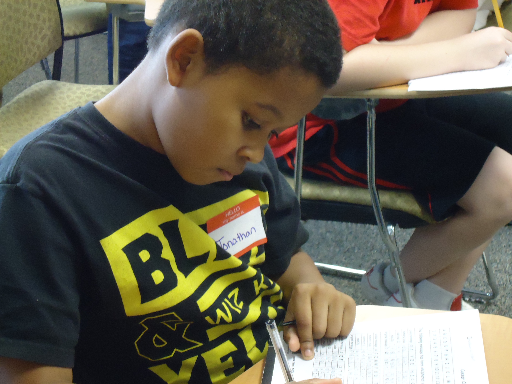
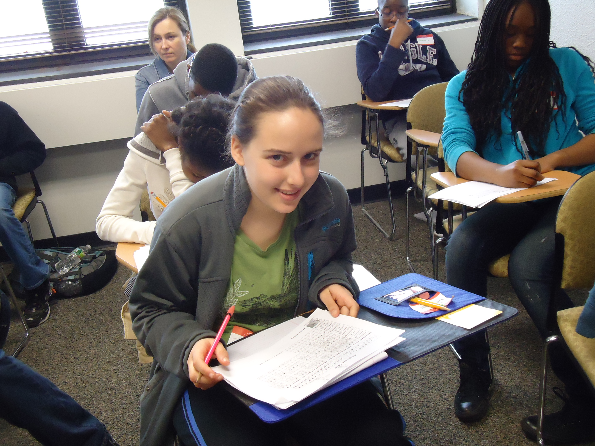
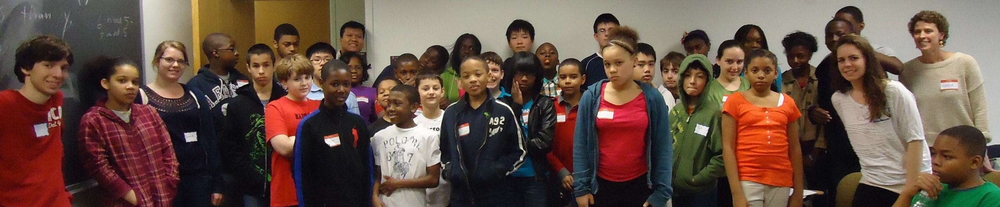
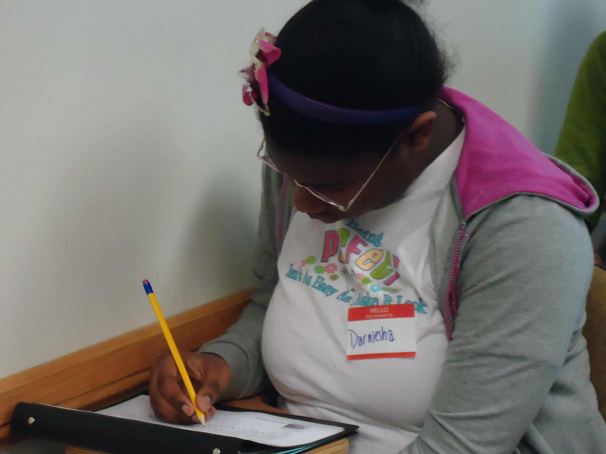
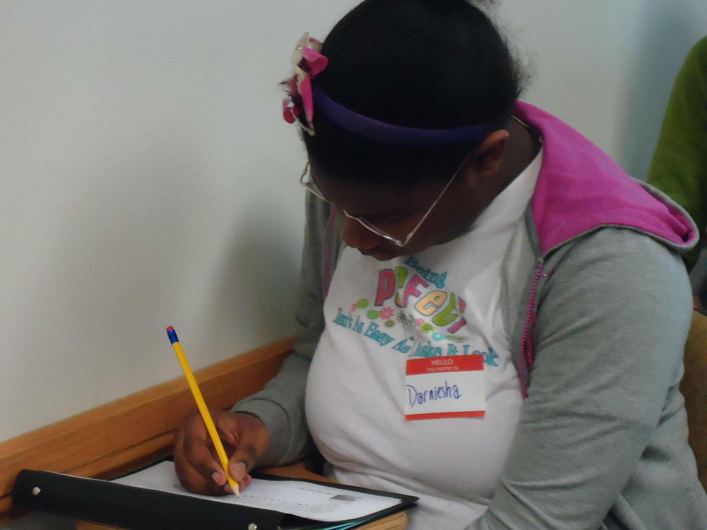
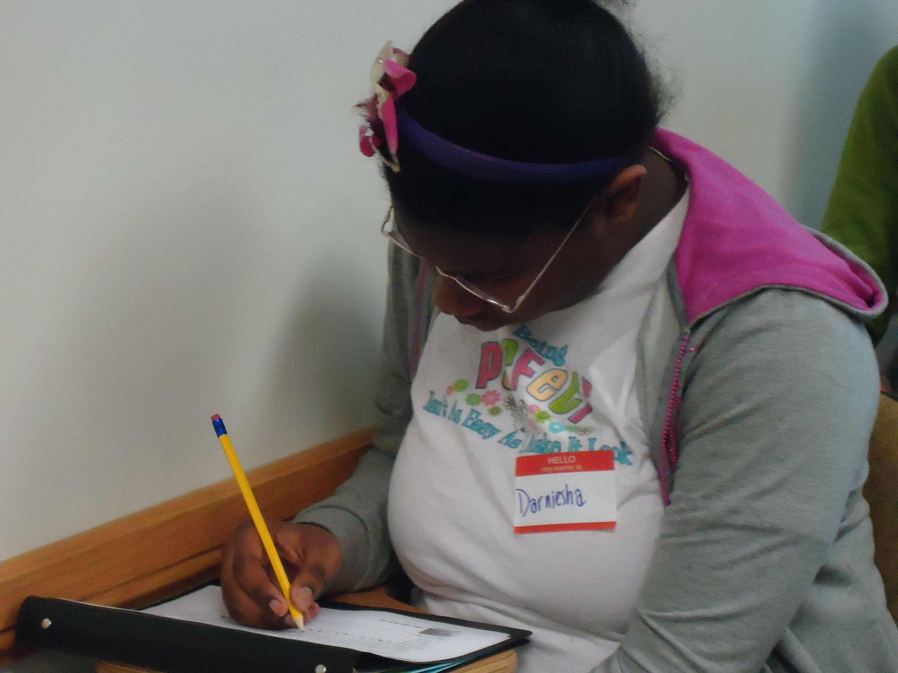

Meeting on selected Saturdays
10:00-11:30 AM, room 617 Wachman Hall
Dates: February 9, February 23,
March 2, March 23, and April 6
Description: This
free of charge Mathematics Circle program
(held on selected Saturdays,
10:00am-11:30am) is designed to provide
middle school students with a variety of
engaging mathematical experiences focused
on extending their understanding and
knowledge in mathematics. Topics
include: mathematics of large
numbers, mathematics in flatland,
tesselations, Catalan numbers, continued
fractions, Zeno's paradox
   
Background: The Math Circle program focuses on
enabling participants to build self-belief and
mathematical confidence, on encouraging and nurturing
excellence in mathematics and sciences, and on
providing exposure to expert mathematical training and
accomplished professionals who may serve as role
models and mentors for the students. The goals of the
Temple University Mathematics Circle are:
to show the middle school students
that the study of mathematics can be
exciting, beautiful and useful;
to build confidence in students'
mathematical knowledge through
engaging and quality mathematical
instruction;
to introduce the middle school
students to a variety of career
opportunities for which sophisticated
mathematical ability plays a key role;
to emphasize the strategic role
mathematics plays for success in STEM
careers;
to provide the participants with
a support group and competent mentors
which are successful undergraduate,
graduate students and professionals
from the STEM workforce;
to ultimately shape the way
students view themselves and their
mathematical interest and ability.
Return Medical Consent and Family
Agreement forms to Ryan Ellenbaum either by email:
ryan.ellenbaum@temple.edu FAX:
(215) 204-6433 US Mail:
Dept. of Mathematics
Temple University
1805 N. Broad St.
Philadelphia, PA
19122
Mentors and Instructors: Mentors and instructors
for the program are undergraduate and graduate
students in STEM disciplines at Temple University.
 
